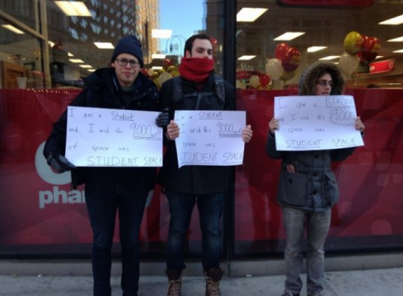

CVS opens its doors under The New School
Amanda Manning & Annelise McGough
 On November 18, the 32nd CVS in New York City opened it’s doors. The location; first floor of
the new University Center.
On November 18, the 32nd CVS in New York City opened it’s doors. The location; first floor of
the new University Center.
The 24hour CVS Pharmacy now occupies the 9,000 square foot space of the UC’s ground level. It
is the sixth CVS within a halfmile of the UC. Basement levels L1 and L2 remain closed until the
Spring semester due to a major flood last Fall that caused damage to both levels.
In an email to The New School community sent in June, President David Van Zandt wrote that
CVS is “a convenient retail option for students on our Greenwich Village campus.”
Some students share a similar opinion. “I think it’s very convenient for students if they need
something,” said Parsons sophomore Elina Guan. The CVS will accept New Card Cash starting the
week of November 24, making it more accessible to New School Students.

Other students think the space should have been allocated to a business more specific to students
needs. “It would be cool if it was a little sewing supply store like FIT has on their campus,” said
Fashion Design student, Adrienne Faurote. “Sewing supplies are so far from us now that we
moved downtown.”
Nicolas Galvan, a BFA at Lang and Mannes, agreed that the space should have been a student
space rather than a retail location. “This 9,000 square feet could be used for student space. Ten
years ago we were in a spot where we didn’t need to take out loans for this building...one of the
things we are doing to get out of this hole is this CVS.”
Galvan, along with Gideon Lazarus and TK, staged a small protest outside the CVS on the day it
opened. All three held signs that read, “I am a student and I wish the 9,000 sqft space was student
space.”
“We don't have a student store, a bookstore for textbooks, enough studio space for actors, dancers,
artists, space for student clubs or even a real gym for people who don't dorm at the UC” said Lang
student and protestor Lazarus.
According to Kasia Broussalian, Communications Manager at TNS, the University hired a broker
to search the market for suitable tenants, never suggesting the space would be for students. In an
email response, Broussalian wrote, “CVS made a very compelling story to us, which was the
shared with the Provost and DVZ, as well as the Board of Trustees.”
Similar statements were echoed by Sam Biederman, former Communications Manager, in a press
release, “CVS was chosen as a tenant because of the valuable services it provides, and because of
its commitment to public health, sustainability, and community outreach.”
 According to a New School press release, CVS is going to follow The New School’s sustainability
practices by having energyefficient LED lighting, locally sourced construction materials and
recycling.
According to a New School press release, CVS is going to follow The New School’s sustainability
practices by having energyefficient LED lighting, locally sourced construction materials and
recycling.
Broussalian said some other ways CVS proved to be the appropriate tenant was their agreement to
“not sell cigarettes, try to stock items which might be needed by our students in the dorms upstairs,
and include some window displays and graphics from our students, faculty and alumni.”
According to The New York Times, CVS stopped selling cigarettes and tobacco products in
October 2014 as a step towards rebranding itself as company focused on health. With The New
School being a smokefree institution, the company’s decision to go tobacco free was a selling
point for the School’s administration.
“The efforts were not coordinated but I know that the board was certainty supportive to welcome a
tobacco free business to campus,” said Biederman.
But will the tobacco free CVS really make a difference for students? Daniela Bizzell, a senior at
Lang, said it wouldn’t. “I don’t care that they don’t sell cigarettes. I get them cheaper elsewhere.”
Other ways CVS and TNS are collaborating is through the locations windows, which will display
designs created by students from Parsons The New School for Design.
Although nothing is planned yet, student health services said they “look forward to exploring
opportunities for collaboration with the new CVS.”